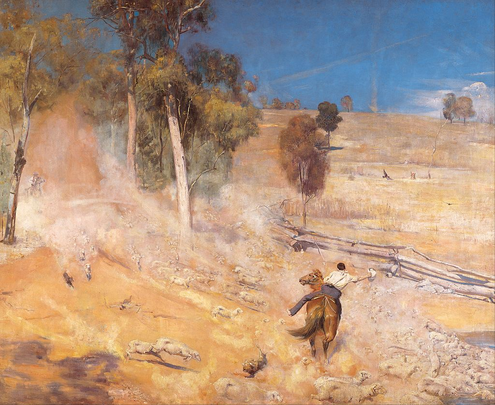

<head>
<meta charset="UTF-8" />
<meta name="keywords" content="drawing, painting" />
<meta name="description" content="drawings by Sunjy" />
<title>Sunjy</title>
<link rel="shortcut icon" type="image/x-icon" href="../../mImages/mCommon/favicon.ico" media="screen" />
<link rel="stylesheet" type="text/css" href="../../mCsses/mCommon/mCssA.css" />
<link rel="stylesheet" type="text/css" href="../../mCsses/mCommon/mCssB.css" />
<link rel="stylesheet" type="text/css" href="../../mCsses/mCommon/mCssC.css" />
<link rel="stylesheet" type="text/css" href="../../mCsses/mCommon/mCssD.css" />
<link rel="stylesheet" type="text/css" href="../../mCsses/mContent/mCssA.css" />
<link rel="stylesheet" type="text/css" href="../../mCsses/mContent/mCssB.css" />
<link rel="stylesheet" type="text/css" href="../../mCsses/mContent/mCssC.css" />
<link rel="stylesheet" type="text/css" href="../../mCsses/mContent/mCssD.css" />
</head>
<script type="text/javascript" src="../../mScripts/mContent/mContentAA.js" /></script>
<script type="text/javascript" src="../../mScripts/mContent/mContentAB.js" /></script>
<script type="text/javascript" src="../../mScripts/mContent/mContentAC.js" /></script>
<script type="text/javascript" src="../../mScripts/mContent/mContentAD.js" /></script>
<script type="text/javascript"></script> 
<script type="text/javascript">
document.write('<div class="mImgAbsolute"></div>');
/*
document.write('<p class="mFontSizeBColor" />From a white paper...</p>');
document.write('<table class="center"><tr><td>');
document.write('');
document.write('</td></tr></table>');
*/
</script>


<script type="text/javascript">
document.write('<p class="mFontSizeBColor" />A Break Away!</p>');
document.write('<p class="mFontSizeSColor" />“A Break Away!” by Tom Roberts depicts a mob of thirsty sheep stampeding towards a dam for water. A drover on horseback is attempting to turn the mob before they crush and drown each other in their natural need to drink.<br><br>This painting, an icon of Australian art, is part of a series of works by Tom Roberts that captured the emerging spirit of national identity in Australia during the 1890s.<br><br>Roberts painted this work at Corowa, a town on the border between New South Wales and Victoria, Australia. The painting presents a time of drought, with little grass, and the soil is just dust. T<br><br>he work itself is a reflection on the pioneering days of the pastoral industry, which were coming to an end by the early 1900s.<br><br><br>Australian Impressionism<br><br>Australian Impressionism is called the Heidelberg School, which was an Australian art movement of the late 19th century.<br><br>The name was derived from an accessible location used by artists who wanted to paint “en Plein Air” in Heidelberg on Melbourne’s city’s outskirts.<br><br>The term then evolved to cover painters who worked together at “artists’ camps” around Melbourne and Sydney in the 1880s and 1890s.<br><br>Successful Australian Impressionist artists include Arthur Streeton, Jane Sutherland, Tom Roberts, Charles Conder, and Frederick McCubbin.<br><br>During the 1870s and 1880s, European artists immigrated to Australia and brought their experience of Plein–air movement to Australia.<br><br>Through their work and teaching, they made significant contributions to the development of Impressionism in Australia. <br><br>Drawing on naturalist and impressionist ideas, they sought to capture Australian life, the bush, and the sunlight of the country.<br><br>In French Impressionism, colors were painted with more explosive energy and with more pure primary and secondary tones for complementary contrasts.<br><br>Australian Impressionists tended to show Australian tones of dry soil, eucalypt woods, and sand, with the dabbling of warm and cold colors.<br><br>Australian Impressionism is notable for its compositions of Australia’s cultural heritage.<br><br>The period leading up to Australia’s Federation in 1901 saw an upsurge in Australian nationalism, and Australian Impressionists of the  Heidelberg School provided works have become icons of an Australia before Federation.<br></p>');
document.write('<table class="center" /><tr><td>');
document.write('<br>This painting, an icon of Australian art, is part of a series of works by Tom Roberts that captured the emerging spirit of national identity in Australia during the 1890s.<br><br>Roberts painted this work at Corowa, a town on the border between New South Wales and Victoria, Australia. The painting presents a time of drought, with little grass, and the soil is just dust. T<br><br>he work itself is a reflection on the pioneering days of the pastoral industry, which were coming to an end by the early 1900s.<br><br><br>Australian Impressionism<br><br>Australian Impressionism is called the Heidelberg School, which was an Australian art movement of the late 19th century.<br><br>The name was derived from an accessible location used by artists who wanted to paint “en Plein Air” in Heidelberg on Melbourne’s city’s outskirts.<br><br>The term then evolved to cover painters who worked together at “artists’ camps” around Melbourne and Sydney in the 1880s and 1890s.<br><br>Successful Australian Impressionist artists include Arthur Streeton, Jane Sutherland, Tom Roberts, Charles Conder, and Frederick McCubbin.<br><br>During the 1870s and 1880s, European artists immigrated to Australia and brought their experience of Plein–air movement to Australia.<br><br>Through their work and teaching, they made significant contributions to the development of Impressionism in Australia. <br><br>Drawing on naturalist and impressionist ideas, they sought to capture Australian life, the bush, and the sunlight of the country.<br><br>In French Impressionism, colors were painted with more explosive energy and with more pure primary and secondary tones for complementary contrasts.<br><br>Australian Impressionists tended to show Australian tones of dry soil, eucalypt woods, and sand, with the dabbling of warm and cold colors.<br><br>Australian Impressionism is notable for its compositions of Australia’s cultural heritage.<br><br>The period leading up to Australia’s Federation in 1901 saw an upsurge in Australian nationalism, and Australian Impressionists of the  Heidelberg School provided works have become icons of an Australia before Federation.<br>" />');
document.write('</td></tr></table>');
</script>


